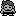

Old man glitch
| PRAMA Initiative a également une page sur Old man glitch. |
| Bulbapedia also has an article about Old man glitch. |
'Missingno. glitch' redirects here, for the glitch Pokémon or 'placeholder entry', see Missingno.
The old man glitch (also known as the Missingno. glitch, although Missingno. is not the only Pokémon that can be encountered using this glitch) is a well-known derivative of the left-facing shore tile glitch in Pokémon Red and Blue, that allows one to capture high-level or glitch Pokémon, based on the player's name, as well as glitch Trainers.
It is performed by watching the old man of Viridian City's catching demonstration, using Fly to go to Cinnabar Island or Fuchsia City and then surfing on one of the following 'left-facing shore tiles':
- The tiles directly east of Cinnabar Island.
- The tiles east of the right-most Seafoam Islands cave.
- The left-facing shore tiles in a Sea Route 19 Safari Zone wrong warp Glitch City.
The previous Pokémon list glitch seemingly does not exist in all the Japanese versions, or Pokémon Yellow, as the tiles east of Cinnabar Island and east of the Seafoam Islands cave apparently never give wild Pokémon.
This glitch was partially fixed in the Italian and Spanish versions of Red and Blue, as Tentacool appear if the player surfs on a left-facing shore tile. This can be worked around with by walking on the tiles; not surfing, by using the walk through walls trick (ledge method); which is a derivative of the Safari Zone exit glitch.
Contents
Requirements
- A Red or Blue Version Pokémon game that has been played up to Cinnabar Island or Seafoam Islands.
- A Pokémon that knows Fly.
- A Pokémon that knows Surf.
Steps
1. Talk to the Old Man at Viridian City who shows you how to catch Pokémon. Say no to his question and watch his demonstration.
2. Fly to Cinnabar Island or Fuchsia City. Do not leave Viridian City before doing this.
3. If you chose Cinnabar Island, Surf along the eastern coast until you encounter a wild Pokémon. If you chose Fuchsia City, go to the shore tiles right of the east-most Seafoam Islands cave.
If using a Spanish or Italian version of Red/Blue, remember to walk across the coast using any version of the walk through walls glitch, instead of surfing on it, or you'll only get wild Tentacool.
Cause
The old man glitch is a combination of two events.
- In English and European versions, surfing (or walking on, if necessary) on one of the shore tiles described in the introduction of this article brings up the previous list of Pokémon in the grass.
- The player's name is temporarily changed to "OLD MAN" during the old man's catching demonstration, and then changed back to what it was before. In the process, the player's name is stored in memory starting from the 'grass encounter rate' memory address, at $D887. After the battle ends, the value at $D887 is changed back to normal, but what follows it (grass Pokémon and level data) starting from $D888 is not.
Saving the player's name here would normally not be a problem, due to the data being updated when you enter a new route, but it is not updated when flying to Cinnabar Island or Fuchsia City, and the first event enables the 'name data Pokémon' to be encountered.
Apparently the reason why grass list encounters appear when the grass encounter rate is 0 is because the left side of the 2x2 block ('shore') controls the type of Pokémon encountered (grass list, water list or none) with 'shore' counting as grass encounters, and the right side of the 2x2 block ('water') controls the encounter rate used (grass rate, water rate or none) with water counting as water rate encounters. Since the water encounter rate for Route 20 is not 0 and grass encounters are used, the player is free to encounter unintended Pokémon on the left-facing shore tile.
Encounters
In at least the English version of Pokémon Red and Blue, the encounters on the left-facing shore tiles work as such:
- The second, fourth, sixth, eighth and tenth characters determine the level of a Pokémon. (the identifier of the letter is used)
- The third, fifth, seventh, ninth and eleventh characters determine the type of Pokémon species or Trainer for values greater than 199. (the identifier of the letter is used)
The characters are case-sensitive.
Example:
The name 'Abwayax' would give a level 'b' (161) Kabutops Fossil Missingno. ('w', hex:B6), a level 'a' (160) Ghost Missingno. ('y', hex:B8), a level 'a' (161) Aerodactyl Fossil Missingno. ('x', hex:B9) and a level 80 (hex:50) 'M (00), due to 50 and 00 characters normally directly following a valid name entry name.
The identifiers of the characters can be found on the The Big HEX List, as well as in the table below:
Table of selectable names:
| Identifier (hex) | Character | Pokémon | Level |
|---|---|---|---|
| 00 | (Null character) | 'M (00) | 0 |
| 50 | (End of name character) | Missingno. (hex:50) | 80 |
| 7F | (space) | Missingno. (hex:7F) | 127 |
| 80 | A | Golduck | 128 |
| 81 | B | Hypno | 129 |
| 82 | C | Golbat | 130 |
| 83 | D | Mewtwo | 131 |
| 84 | E | Snorlax | 132 |
| 85 | F | Magikarp | 133 |
| 86 | G | Missingno. (hex:86) | 134 |
| 87 | H | Missingno. (hex:87) | 135 |
| 88 | I | Muk | 136 |
| 89 | J | Missingno. (hex:89) | 137 |
| 8A | K | Kingler | 138 |
| 8B | L | Cloyster | 139 |
| 8C | M | Missingno. (hex:8C) | 140 |
| 8D | N | Electrode | 141 |
| 8E | O | Clefable | 142 |
| 8F | P | Weezing | 143 |
| 90 | Q | Persian | 144 |
| 91 | R | Marowak | 145 |
| 92 | S | Missingno. (hex:92) | 146 |
| 93 | T | Haunter | 147 |
| 94 | U | Abra | 148 |
| 95 | V | Alakazam | 149 |
| 96 | W | Pidgeotto | 150 |
| 97 | X | Pidgeot | 151 |
| 98 | Y | Starmie | 152 |
| 99 | Z | Bulbasaur | 153 |
| 9A | ( | Venusaur | 154 |
| 9B | ) | Tentacruel | 155 |
| 9C | : | Missingno. (hex:9C) | 156 |
| 9D | ; | Goldeen | 157 |
| 9E | [ | Seaking | 158 |
| 9F | ] | Missingno. (hex:9F) | 159 |
| A0 | a | Missingno. (hex:A0) | 160 |
| A1 | b | Missingno. (hex:A1) | 161 |
| A2 | c | Missingno. (hex:A2) | 162 |
| A3 | d | Ponyta | 163 |
| A4 | e | Rapidash | 164 |
| A5 | f | Rattata | 165 |
| A6 | g | Raticate | 166 |
| A7 | h | Nidorino | 167 |
| A8 | i | Nidorina | 168 |
| A9 | j | Geodude | 169 |
| AA | k | Porygon | 170 |
| AB | l | Aerodactyl | 171 |
| AC | m | Missingno. (hex:AC) | 172 |
| AD | n | Magnemite | 173 |
| AE | o | Missingno. (hex:AE) | 174 |
| AF | p | Missingno. (hex:AF) | 175 |
| B0 | q | Charmander | 176 |
| B1 | r | Squirtle | 177 |
| B2 | s | Charmeleon | 178 |
| B3 | t | Wartortle | 179 |
| B4 | u | Charizard | 180 |
| B5 | v | Missingno. (hex:B5) | 181 |
| B6 | w | Kabutops Fossil Missingno. | 182 |
| B7 | x | Aerodactyl Fossil Missingno. | 183 |
| B8 | y | Ghost Missingno. | 184 |
| B9 | z | Oddish | 185 |
| C0 | Ä (German version only) | à Ö (hex:C0) | 192 |
| C1 | Ö (German version only) | ö ゥ (hex:C1) | 193 |
| C2 | Ü (German version only) | ゥ 4 î (hex:C2) | 194 |
| C3 | ä (German version only) | hûPOKé (hex:C3) | 195 |
| C4 | ö (German version only) | äPOKé (hex:C4) | 196 |
| C5 | ü (German version only) | PKMN A (hex:C5) | 197 |
| E1 | PK | Rival (picture/class #1) | 225 |
| E2 | MN | Prof. Oak | 226 |
| E3 | - | Chief | 227 |
| E6 | ? | Rocket | 230 |
| E7 | ! | CoolTrainer♂ | 231 |
| EF | ♂ | Blaine | 239 |
| F1 | × (multiplication symbol) | Gentleman | 241 |
| F2 | . | Rival (picture/class #2) | 242 |
| F3 | / | Rival (champion) | 243 |
| F4 | , | Lorelei | 244 |
| F5 | ♀ | Channeler | 245 |
Default name yields
If the player's name was selected from one of the choices at the beginning of the game (e.g. RED), extra Pokémon can be encountered that wouldn't appear if they had entered the same name manually.
This is because internally extra letters appear in these names after the end (hex:50) characters. The names are actually as they appear in the table below.
| Red | Blue |
|---|---|
| RED(50)ASH(50)JAC | BLUE(50)GARY(50)J |
| ASH(50)JACK(50)NE | GARY(50)JOHN(50)N |
| JACK(50)NEW(7F)NA | JOHN(50)NEW(7F)NA |
As none of these names have a no hex:00 character in letters 3, 5, 7, 9 or 11, hex:00 ('M (00)) cannot be encountered with a default name, at least in the English versions.
The next table below shows what default names give what Pokémon.
| Name | Level 1 | Pokémon 1 | Level 2 | Pokémon 2 | Level 3 | Pokémon 3 | Level 4 | Pokémon 4 | Level 5 | Pokémon 5 |
|---|---|---|---|---|---|---|---|---|---|---|
| RED | 132 | Mewtwo | 80 | Golduck | 146 | Missingno. (hex:87) | 80 | Missingno. (hex:89) | 128 | Golbat |
| ASH | 146 | Missingno. (hex:87) | 80 | Missingno. (hex:89) | 128 | Golbat | 138 | Missingno. (hex:50) | 141 | Snorlax |
| JACK | 128 | Golbat | 138 | Missingno. (hex:50) | 141 | Snorlax | 150 | Missingno. (hex:7F) | 141 | Golduck |
Extra Pokémon from the German version
Exclusively to the German version, the letters Ä (hex:C0), Ö (hex:C1), Ü (hex:C2), ä (hex:C3), ö (hex:C4) and ü (hex:C5) can be entered on the 'your name' screen, and these can be used to encounter glitch Pokémon with index numbers from 192-197, but the hex:C2 and hex:C5 glitch Pokémon (may) freeze the game on encounter.
Glitch Trainers
Since the old man glitch allows fighting trainers on the "wild encounter" code path, the enemy parameters are not properly initialized. Hence:
- The glitch Trainers encountered through the Old man glitch always have the same rosters as Trainer class 0.
- The roster loaded depends on the roster number of the last trainer fought.
Item duplication
See also: infinite item glitches (disambiguation).
The old man glitch is arguably the easiest and most reliable way of encountering Missingno. and 'M (00). As their invalid Pokédex flag (#000 but effectively #256) means that encountering or capturing Missingno. and 'M adds a quantity of 128 to the sixth item in the player's bag if the quantity is less than 128, it is ideal for duplicating items, such as Rare Candies and Master Balls.
Item mutation
See also: item morphing glitches (disambiguation).
The old man glitch can be used to convert the fourth item into a few other items if the player has a name that lets them encounter a Trainer, and the identifier of the fourth item is not $1X, $3X, $5X, $7X, $9X, $BX, $DX, or $FX. This requires fighting a Rocket on Silph Co.'s 11F first.
The Trainer has level 250 Pokémon, and may use a Super Glitch inducing move, so a high level Pokémon with a one-hit KO move, X Speeds and an X Accuracy is recommended as it's otherwise impossible to defeat all of their Pokémon in one hit, and after the Super Glitch effect happens, the Trainer can send out the Pokémon that just fainted.
For more information, see get glitch items using left-facing shore tile glitch.
0x1500 control code arbitrary code execution (Crystal) | Cart-swap arbitrary code execution | Generation I custom map script pointer | Generation I invalid meta-map scripts | Generation I item ("8F", "ws m", "-g m", "5かい", "てへ" etc.) | Generation I move ("-", "TM42") | Generation I Trainer escape glitch text boxes | Generation II bad clone | Generation II Burned Tower Silver | Japanese Crystal Pokémon Communication Center SRAM glitches | Coin Case glitch | Generation II glitch Pokédex sortings | Pikachu off-screen glitch ACE | OAM DMA hijacking | Pikachu glitch emote | Generation III glitch Pokémon summary | Generation III glitch move animation) | Remote code execution | TM/HMs outside of the TM/HM pocket | ZZAZZ glitch Trainer FC
[hr]
 No further extensions
No further extensions 
Cloning | Item duplication glitch (Generation I) | Pokémon merge glitch ("Q Glitch", Generation I) | Time Capsule exploit | Bug-Catching Contest data copy glitch (Generation II, Japan only) | Berry glitch | Battle Tower [email protected] glitch (Generation III) | (Mimic) Transform Rage glitch (Generation IV)
Transform held item glitch (Generation IV, Japan only) | Mimic glitch (Generation IV, Japan only)
[hr]  Buffer overflow techniques
99 item stack glitch | LOL glitch | Rival LOL glitch | Instant LOL glitch | RAM LOL glitch | Out of bounds LOL glitch | blockoobLG | Instant encounter infinite chain glitch | LGFly | Super Glitch (Generation I) | Party remaining HP glitch | Super Glitch (Generation III) | Text pointer manipulation mart buffer overflow glitch | CoolTrainer♀-type move | Double distort CoolTrainer♀ corruption | Yami Shop glitch | Party Pokémon box data shift glitch | Unterminated name glitch item instant encounter (Japanese Red/Green)
[hr]
 Item stack duplication glitch (Generation I)
Item stack duplication glitch (Generation I) 
Generation I expanded items pack (Glitch Rocket HQ maps, Map FE (English and non-English European Yellow) | Map script pointer manipulation (arbitrary code execution | Map script pointer item ball manipulation) | Text pointer manipulation (arbitrary code execution | Item ball manipulation | Mart buffer overflow) | Trainerless instant encounter glitch
[hr]
 Bad clone glitch (Generation II)
Bad clone glitch (Generation II) 
????? party overloading (Type 0xD0 move glitch | ????? map corruption | Celebi trick | Celebi Egg trick | Shiny Celebi trick | Glitch move map corruption | Overloaded party map corruption | Glitch Unown (Glitch Unown map corruption) | Duplicate key items glitch (Infinite items and item creation, Expanded Balls pocket (Wrong pocket TM/HMs, Glitch Pokédex categories))
[hr]
 Closed menu Select glitches (Japanese Red/Green)
Closed menu Select glitches (Japanese Red/Green) 
Dokokashira door glitch (International) | Fossil conversion glitch (international) | Second type glitch | Skip to Level 100 glitch | Trainer mutation glitch | Walk through walls (International) | Lift glitch | Badge describer glitch
[hr]
 Pomeg glitch (Generation III)
Pomeg glitch (Generation III) 
Pomeg data corruption glitch ("Glitzer Popping") | Charm glitch
[hr]
 Voiding (Generation IV)
Voiding (Generation IV) 
Broken escalator glitch (Japan only) | Elite Four door glitch (Japan only)
[hr]
 2x2 block encounter glitches (Generation I)
2x2 block encounter glitches (Generation I) 
Left-facing shore tile glitch (in-game trade shore encounter trick, Old man trick, Trade link up shore encounter trick, Fight Safari Zone Pokémon trick) | Viridian Forest no encounter grass tiles glitch
[hr]
 Glitch City
Glitch City 
Safari Zone exit glitch | RAM manipulation | Out of bounds Glitch City (Generation II) | Slowpoke Well out of bounds corruption (French Gold/Silver/Crystal)
[hr]
 Large storage box byte shift glitch
Large storage box byte shift glitch 
Storage box remaining HP glitch | Generation I max stat trick
[hr]
 Pikachu off-screen glitch
Pikachu off-screen glitch 
[hr]
 SRAM glitches
SRAM glitches 
Generation I save corruption | 255 Pokémon glitch | Expanded party encounter table manipulation (Generation I) | Send party Pokémon to a new game (Generation I) | Generation II save corruption | Mailbox glitches | Mystery Gift item corruption | Trainer House glitches
Death-warp | Ditto trick | Experience underflow glitch | Mew trick | Text box ID matching | Meta-map script activation
[hr]
 Walk through walls
Walk through walls 
Ledge method | Museum guy method | Rival's effect | Select glitch method (International Select glitch method), Brock Through Walls
[hr]
 Surf down glitch
Surf down glitch 
Grass/rock Surfing glitch (Spanish/Italian only) (adaptions: Submerge glitch (international)) | 8 8 (0x7C) grass/rock surfing glitch (English Red/Blue))